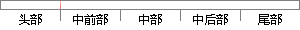

给程序计数器PC强行赋值，跳转到相应的异常向量地址处执行相应的处理程序。
片段位置图

相似结果
相似片段：把R14的指赋值到程序计数器PC中时,子程序返回; {...系统执行完当前指令后,将跳转到相应的异常中断处理...将程序计数器值PC设置成该异常中断的中断向量地址,...
| 标题 | 《基于ARM的无线视频传输硬件系统的初步研究与开发》 |
| 对比库 | 中国学位论文全文数据库 |
| 作者 | 刘志勇 |
| 机构 | 哈尔滨工业大学 |
| 分类 | 通信与信息系统 |
| 年份 | 2005 |
| 相似率 | 86.21% （严重抄袭） |
※ 片段修改建议 ※
近似词参考：- 处理：处置 处置惩罚
- 执行：履行 实行
- 地址：地点
- 异常：非常 异样
- 相应：响应
- 程序：法式 步伐
系统自动生成语句： 给法式计数器PC强行赋值，跳转到响应的非常向量地点处履行响应的处置法式。
注：本片段修改建议为系统自动生成，仅供参考。